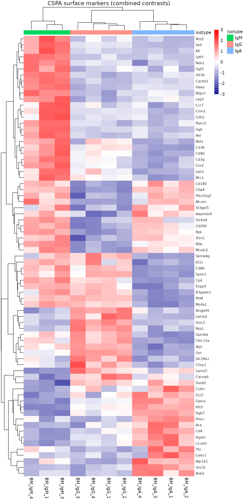

Reproduce differential expression with this package module:
diffexp_out <- run_diffexp_pipeline(dds_qc, var = "condition")Reproduce PPI connectivity (embedded below per contrast) with:
ppi_out <- run_ppi_pipeline(diffexp_out = diffexp_out)Reproduce CSPA surface-marker heatmaps with:
cspa_out <- run_cspa_marker_pipeline(dds_qc, diffexp_out, var = "condition")Each row is one comparison: the question it asks, the design formula
fitted for it, and the number of samples that model sees. The same table
is written to deseq2/contrasts.csv.
| Contrast | Question | Design fitted | n | Coefficients |
|---|---|---|---|---|
| IgG_vs_IgM | Is isotype IgG versus IgM differentially expressed? | ~batch + isotype | 11 | NA |
| IgA_vs_IgM | Is isotype IgA versus IgM differentially expressed? | ~batch + isotype | 11 | NA |
| IgA_vs_IgG | Is isotype IgA versus IgG differentially expressed? | ~batch + isotype | 11 | NA |
| IgM_vs_IgG+IgA | Is isotype IgM versus IgG + IgA differentially expressed? | ~batch + isotype | 11 | NA |
| IgG_vs_IgM+IgA | Is isotype IgG versus IgM + IgA differentially expressed? | ~batch + isotype | 11 | NA |
| IgA_vs_IgM+IgG | Is isotype IgA versus IgM + IgG differentially expressed? | ~batch + isotype | 11 | NA |
Per contrast: number and percent of significant DEGs
(padj < 0.05 and |log2FoldChange| > 0.5)
among genes with non-NA padj. Up / down follow the sign of
log2FoldChange.
| Contrast | Tested | Significant | Up | % up | Down | % down |
|---|---|---|---|---|---|---|
| IgG_vs_IgM | 13306 | 986 | 454 | 3.41% | 532 | 4.00% |
| IgA_vs_IgM | 13570 | 1348 | 655 | 4.83% | 693 | 5.11% |
| IgA_vs_IgG | 13570 | 970 | 500 | 3.68% | 470 | 3.46% |
| IgM_vs_IgG+IgA | 13570 | 771 | 415 | 3.06% | 356 | 2.62% |
| IgG_vs_IgM+IgA | 12517 | 443 | 215 | 1.72% | 228 | 1.82% |
| IgA_vs_IgM+IgG | 13570 | 824 | 406 | 2.99% | 418 | 3.08% |
Each contrast has its own page to keep HTML size manageable:
Union of per-contrast top Cell Surface Protein Atlas (CSPA) markers (all categories; organism = mouse, 1268 CSPA genes). Heatmap: row-scaled ComBat-seq then VST across all samples. 73 unique markers.
